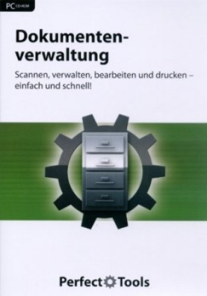

Dokumentenmanagement Software: Die 8 besten Tools 2020 im Vergleich
 Software & Tools Online Dienste Login Software & Tools Online Dienste Magazin Login trusted Collaboration & Kommunikation Software Dokumentenmanagement Werbehinweis Diese Webseite verwendet Affiliate-Links. Erfolgt eine Bestellung oder ein Kauf über diese Links, erhält trusted eine Provision vom jeweiligen Anbieter. Das ermöglicht es uns, Ihnen unseren Service und unsere Inhalte kostenlos zur Verfügung zu stellen. Die Provision hat keinen Einfluss auf unsere Bewertung oder unser Ranking! Wir bewerten stets neutral und unabhängig.
Software & Tools Online Dienste Login Software & Tools Online Dienste Magazin Login trusted Collaboration & Kommunikation Software Dokumentenmanagement Werbehinweis Diese Webseite verwendet Affiliate-Links. Erfolgt eine Bestellung oder ein Kauf über diese Links, erhält trusted eine Provision vom jeweiligen Anbieter. Das ermöglicht es uns, Ihnen unseren Service und unsere Inhalte kostenlos zur Verfügung zu stellen. Die Provision hat keinen Einfluss auf unsere Bewertung oder unser Ranking! Wir bewerten stets neutral und unabhängig.
Dokumentenmanagement Software im Vergleich
Die 8 besten Dokumentenmanagement Tools im Test
Mathias Lohrey Online-MarketingDokument Management Systeme (DMS) organisieren den Umgang mit Dokumenten in Ihrem Unternehmen. Sie helfen bei der Digitalisierung, Kategorisierung, Archivierung und Automatisierung von Dokumenten.
Top Filter Mehr Filter Unterstützte Plattformen Cloud / SaaS Windows iOS Android On Premise alle 5 anzeigen Geeignet für Freelancer Startup Kleine Unternehmen Mittelständische Unternehmen Großunternehmen Gemeinnützige Organisationen Öffentliche Verwaltung Vereine alle 8 anzeigen Serverstandort Deutschland Europa USA Support 24/7 Support Ticketsystem E-Mail Live Chat Telefon FAQs Forum Blog Video Tutorials alle 9 anzeigen Sprachen Niederländisch Polnisch Portugiesisch Russisch Türkisch Deutsch Englisch Spanisch Französisch Italienisch alle 10 anzeigen Schnittstellen 1ShoppingCart API Google Mail Interspire MadMimi Microsoft Exchange Microsoft Outlook Wishpond alle 8 anzeigen Preismodell pro Monat pro User/Monat pro Lizenz Sonstiges Kostenlose Testphase Allgemein Serverseitig verschlüsselt Training In Person (in Europa) Live Online Webinar & Video Dokumentation alle 4 anzeigen Sortierung: Gesponsert A-Z Preis Bewertungen Gesponsert A-Z Preis BewertungenDoxis4
5Doxis4
Großer Funktionsumfang Gelungene Office-Integration Hohe Datensicherheit Kein gemeinsames Bearbeiten Bewertungen Preis auf Anfrage Zum AnbieterAlfresco
3.5Alfresco
Kostenlose Community Edition Mobile Anwendungen Viele Funktionen Kein Support für Community Edition Preis auf Anfrage Zum ProfilAMAGNO
4.1AMAGNO
Kompletter Funktionsumfang Automatisierte Abläufe Auch als Cloud-Version erhältlich Flexibles Preismodell Mobile-Funktionen eingeschränkt Bewertungen Preis auf Anfrage Zum ProfilAmazon WorkDocs
4.1Amazon WorkDocs
Einfache, intuitive Bedienung Geringe monatliche Kosten Keine Installation vonnöten Testversion nur für 30 Tage ab 5,00 € pro Benutzer im Monat Zum Profild.3ecm
4.2d.3ecm
Effiziente Arbeit mit Dokumenten Revisionssichere Aufbewahrung Strukturiertes Recherchesystem Modularer Aufbau Sehr komplexe Funktionen Bewertungen Preis auf Anfrage Zum ProfilDocuWare
4.3DocuWare
Auch als Cloud-Service erhältlich Gesetzeskonforme Archivierung Einfache Integration Automatisierung wichtiger Vorgänge Preise nur auf Nachfrage Preis auf Anfrage Zum ProfilecoDMS
2ecoDMS
Plattformübergreifend Auch für Privatanwender Sehr günstig Support kostenpflichtig Bewertungen ab 89,00 € pro Lizenz Zum ProfilTMS Archiv
TMS Archiv
Keine Installation notwendig Zugriff über Browser Komfortable Benutzerverwaltung Keine Zusatzfeatures Preis auf Anfrage Zum Profil Seite 1 von 1Dokumentenmanagement Software Ratgeber: So finden Sie das richtige Tool für Ihr Unternehmen
Mathias Lohrey Online-Marketing von trusted Inhaltsverzeichnis Was ist ein Dokumentenmanagement System bzw. DMS? Was ist der Unterschied zu einem ECM? Vorteile eines Dokumentenmanagementsystems Gibt es auch Nachteile? Die Kosten für ein Dokumentenmanagement System Darauf sollten Sie bei der Anbieterwahl achten Kernfunktionen im Überblick Für wen eignen sich Dokumentenmanagement Systeme? Dokumentenmanagement Software auf dem Markt Fazit: Dokumentenmanagement Systeme verkürzen, verbessern und automatisieren ArbeitsprozesseDokumentenmanagement Systeme (DMS) unterstützen Ihr Unternehmen bei der Verwaltung von Dokumenten mit Modulen zur Digitalisierung, Organisation, Archivierung und weiteren Bereichen. Durch eine bessere und einheitliche Ablagestruktur sparen Ihre Mitarbeiter viel Zeit und Mühe beim Umgang mit Dokumenten. Formulare, Verträge und Listen lassen sich schneller wiederfinden. Die Zahl der DMS Anbieter ist groß, die Unterschiede auch. Zwar finden sich immer wieder die gleichen Module und Funktionen, aber Aufbau und Philosophie der einzelnen Programme variieren stark.
Was ist ein Dokumentenmanagement System bzw. DMS?
Problem Parallelwirtschaft
Zwischen digitalen und Print-Dokumenten suchen Mitarbeiter oft vergebens - DMS verhindern dies.
Dokumentmanagement umfasst ein weites Aufgabenfeld. Die Archivierung von Dokumenten, die Automatisierung der Dokumenterstellung und die Digitalisierung von Print-Dokumenten gehören ebenso dazu, wie eine Optimierung der Ablagestruktur für eine effizientere Arbeitsweise. Je nach Aufgabenbereich sind dabei ganz andere Dinge wichtig, sodass jedes Unternehmen individuell entscheiden muss, welche DMS Systeme in Frage kommen.
Grundsätzlich aber hilft ein Dokumenten Management System dabei, den Umgang mit Dokumenten aller Art innerhalb eines Unternehmens besser zu organisieren. Oft verbringen Mitarbeiter viel Zeit damit, nach den richtigen Dokumenten zu suchen, bevor sie überhaupt damit arbeiten. So hilft DMS Software, den Workflow zu verbessern.
Was ist der Unterschied zu einem ECM?
Auf den ersten Blick wirken Enterprise-Content-Management-Systeme (ECM) und Dokumentenmanagementsysteme (DMS) sehr ähnlich. Inhaltlich aber fokussiert das Konzept von ECM die alleinige unternehmensweite Verwaltung und Bearbeitung aller vorhandenen Unternehmensinformationen. DMS Systeme hingegen ermöglichen das Digitalisieren, Ablegen, Finden und Bearbeiten von Dokumenten. Somit ist DMS Software Teil jeder ECM-Lösung, kann aber auch gut alleine eingesetzt werden. Bei manchen Anbietern gestaltet sich der Übergang fließend.
Vorteile eines Dokumentenmanagementsystems
Schnellerer Informationszugriff
DMS Software bündelt die verschiedenen Archive und Ablageorte. Durch intelligente Suchsysteme mit Metadaten- und Volltextsuche stehen Ihren Mitarbeitern alle relevanten Informationen blitzschnell zur Verfügung.
Höhere Transparenz von Vorgängen
Dokumentenmanagementsysteme vereinheitlichen Prozesse von der Digitalisierung bis hin zur Archivierung. Dadurch entstehen ganz neue Möglichkeiten für die Analyse einzelner Arbeitsschritte und das Controlling im Allgemeinen.
Besserer Kundenservice
Nicht nur Ihre Mitarbeiter, auch Ihre Kunden profitieren von besser organisierten Dokumenten. So machen Sie Informationen und Dokumente schneller und mit weniger Aufwand verfügbar.
Weitere interessante Möglichkeiten bietet die Automatisierung von Dokumenten, die ein schnelleres und einfacheres Ausfüllen von Formularen ermöglicht.
Weniger Fehler & Wegfall von Duplikaten
Eine kleine Fehlabsprache und schon ist es passiert: Verschiedene Mitarbeiter arbeiten mit verschiedenen Versionen desselben Dokuments. Dies ist nur eine von vielen unnötigen Fehlerquellen, die mit einem Dokumentmanagement System endgültig der Vergangenheit angehören. So entsteht weniger Frust und Zeitverlust.
Höhere Sicherheit für Ihre Dokumente
In einer DMS Software gehen Dokumente nicht einfach verloren. Versionierung und wiederherstellbare Dateien gehören zum Standardprogramm der Anbieter.
In den meisten Fällen ist es möglich, automatisch Kopien auf ausfallsicheren Servern anzulegen.
Geringerer Platzbedarf und Entlastung von Email-Systemen
Digitalisierung schafft Platz. Regalweise Aktenordner sind schlicht nicht mehr nötig. Auf der anderen Seite aber entlastet DMS Software auch Ihre digitalen Informationssysteme, wie etwa den Email-Verkehr. Sie müssen nicht länger große Anhänge verschicken, sondern arbeiten mit Links und garantieren, dass alle Mitarbeiter mit dem richtigen Dokument arbeiten. Sie benötigen also weniger Platz und sparen gleichzeitig an Ihrem internen Datenverkehr.
Höhere Motivation der Mitarbeiter
Eigentlich ist es ganz logisch: DMS Software nimmt Ihnen und Ihren Mitarbeitern langwierige und ermüdende Suchvorgänge ab und bietet stattdessen einen schnellen Überblick über relevante Informationen. Dadurch bleibt Ihrem Team mehr Zeit für die eigentlich interessante und kreative Arbeit. Sie dürfen also durch die Einführung eines Dokumentenmanagement Systems langfristig eine bessere Motivation Ihrer Mitarbeiter erwarten.
Gibt es auch Nachteile?
Manche Systeme zur Dokumentenverwaltung sind so komplex, dass sich Ihre Mitarbeiter erst an die Software gewöhnen werden müssen. In diesen Fällen stehen die Anbieter jedoch mit eigenen Schulungsteams bereit, um die Trainingsphase möglichst kurz zu halten. Andere Anbieter gestalten ihre Systeme so intuitiv, dass dieser Aufwand gar nicht nötig ist.
Ansonsten gibt es prinzipiell keine Nachteile von DMS Software. Vorausgesetzt natürlich, Sie haben sich für den passenden Anbieter entschieden. Die Unterschiede sind riesig und das falsche System könnte Abläufe komplizierter machen, statt sie zu vereinfachen. Seien Sie also vorsichtig bei der Anbieterwahl und stützen Sie sich auf unsere Erfahrungen im trusted.de Dokumentmanagement System Vergleich.
Die Kosten für ein Dokumentenmanagement System
Es ist im Bereich der Dokument Management Systeme üblich, dass die Software individuell auf Ihre Bedürfnisse zugeschnitten wird. Dementsprechend variiert auch der Preis. Aus diesem Grund machen wir hier keine Angaben zu exakten Zahlen. Klar ist aber, dass der Preis sich nach der Anzahl der Nutzer und dem Funktionsumfang richtet.
Überlegen Sie, ob Sie eine On-Premise Lösung oder das Arbeiten in der Cloud bevorzugen.
Darauf sollten Sie bei der Anbieterwahl achten
Es ist überaus wichtig, dass Sie das richtige System für Ihre Anforderungen wählen und gleichzeitig gar nicht so einfach. Wir können deshalb nur dazu raten, im Vorhinein genau zu klären, was Sie von dem DMS System erwarten und in welcher Form dies umgesetzt werden soll. Eine Open Source Lösung kann genau das Richtige sein, wenn Sie in Ihrem Unternehmen talentierte Entwickler beschäftigen und eine individuell angepasste Lösung wünschen. Andererseits ist für kleine Unternehmen oft das Gegenteil wichtig: Ein sofort funktionierendes und einfach zu bedienendes Dokumenten Management System.
Überlegen Sie sich also genau, welche Arbeitsschritte künftig die DMS Software erleichtern soll. Digitalisierung? Automatisierung? Archivierung? Bessere Suchfunktionen? Fehlervermeidung? Vereinheitlichung?
Kernfunktionen im Überblick
DMS Cloud
Eine DMS Software aus der Cloud kann zwei Dinge beinhalten: Zum einen kann die Software aus der Cloud heraus arbeiten, also quasi per Cloud Computing. Sie müssen dann nicht auf jedem Firmenrechner die komplette Software installieren. Außerdem kann eine DMS Cloud auch ihre Dokumente in der Cloud speichern oder zumindest sichern. Das hat den Vorteil, dass Sie nicht auf lokale Speichermedien angewiesen sind. Sie haben dann mehr Platz und mehr Sicherheit gegen Datenverlust. Außerdem können Mitarbeiter von verschiedenen Orten auf die Daten zugreifen.
DMS on Premise
“On-Premise” ist das Gegenteil zum Arbeiten in der “Cloud”. On-Premise Dokumentmanagement arbeitet ausschließlich mit den Firmenrechnern bzw. mit firmeneigenen Servern.
On-Premise Lösungen machen dann Sinn, wenn Sie besonders heikle Daten verarbeiten oder über eine schwache Internetverbindung verfügen.
Dokument-Versionen
Versionierung von Dokumenten ermöglicht es, gleichzeitig und fortwährend an denselben Dokumenten zu arbeiten, ohne dass alte Versionen verloren gehen. So können Sie Änderungen nachvollziehen und gegebenenfalls rückgängig machen.
Zugriffsrechte
In kaum einem Unternehmen, haben alle Mitarbeiter Einblick in alle Dokumente. Um trotzdem auch solche “geheimen” Dokumente in Ihr DMS System einzuspeisen, vergeben Sie einfach spezifische Zugriffsrechte für einzelne Dokumente oder Dokumentgruppen. So profitieren alle Mitarbeiter gleichermaßen von den Vorteilen der DMS Software ohne zu viel Einsicht in sensible Daten zu bekommen.
OCR-Engine
Eine Optical Character Recognition Engine ist eine Software, die Print-Dokumente beim Scan auslesen kann und in bearbeitbare Dokumente umwandelt. So werden diese Papiere der Suchfunktion zugänglich und können nachträglich weiterverabeitet werden.
Eine leistungsstarke OCR-Engine ist besonders wichtig, wenn Sie bestehende Papier-Archive digitalisieren möchten oder für die Zukunft einen Arbeitsprozess mit einem solchen Transfer planen.
Für wen eignen sich Dokumentenmanagement Systeme?
Alle Unternehmen, die mit einer Vielzahl von Dokumenten zu tun haben, müssen sich früher oder später mit der Verwaltung und Organisation dieser Dokumente beschäftigen. Da ist es besser, wenn Sie sich rechtzeitig um eine nachhaltige Lösung kümmern. Immerhin macht ein DMS System nicht nur den Dokumentenwust übersichtlicher, sondern beschleunigt auch die Arbeitsweise Ihrer Mitarbeiter. Typische Branchen mit Einsatz von DMS Software sind zum Beispiel: Kanzleien, Arztpraxen, Online-Shops, Redaktionen, Verlage, Banken, Versicherungen und viele mehr. Ab einer gewissen Größe benötigt aber so gut wie jedes Unternehmen eine entsprechende Lösung.
Kein Bedarf hingegen besteht in Unternehmen, die sich nur gelegentlich mit einzelnen Verträgen oder anderen Dokumenten beschäftigen. Simple Lösungen ohne Einarbeitung können zwar auch hier Vorteile bringen, sind aber nicht unbedingt notwendig.
Dokumentenmanagement Software auf dem Markt
trusted.de hat bereits einige Anbieter und deren Softwares aus dem Bereich Dokumenten Managament Systeme für Sie verglichen. Zu den gängigsten Tools zählen etwa:
agorum core Alfresco Compart DATEV DMS classic pro DocuWare Easy DMS eFileCabinet ELO enaio Ftag-cloud-itemghtFazit: Dokumentenmanagement Systeme verkürzen, verbessern und automatisieren Arbeitsprozesse
DMS Software macht Sinn, wenn eine Vielzahl von Dokumenten bewältigt werden muss. Die Einsatzmöglichkeiten sind letztlich vielfältig, im Kern aber erleichtern DMS Systeme das Digitalisieren, Ablegen, Auffinden, Bearbeiten und Archivieren von Dokumenten. Das spart Platz, schafft Überblick und erleichtert den Zugriff auf die jeweils relevanten Daten. Ihren Mitarbeitern werden dadurch vor allem eintönige und langwierige Recherche- und Sucharbeiten abgenommen, sodass Sie sich schneller mit ihren eigentlichen Aufgaben beschäftigen können. So arbeitet Ihr Team nicht nur effizienter, sondern auch mit mehr Motivation.
Verschaffen Sie sich noch heute einen Überblick über die wichtigsten Anbieter für DMS Software. Die Wahl des richtigen Anbieters ist von zentraler Bedeutung. Lassen Sie sich von unserer trusted.de DMS Anbieter Übersicht weiterhelfen.
Mathias Lohrey Mathias hat es vor allem aufgrund seiner technischen Begeisterung zu trusted.de verschlagen. Ob Software, Hardware oder Gadgets - wenn es neu ist, will Mathias es testen. Dabei schreckt er selbst vor sperrigen Themen wie Shop- oder Webhosting nicht zurück und bereichert die Redaktion mit seiner Neugier und seiner Expertise. Daneben unterstützt er trusted vor allem durch die Betreuung diverser Marketing-Kanäle und sorgt dafür, dass unsere Vergleiche so viele Unternehmen wie möglich erreichen. Mathias Lohrey Online-MarketingMathias hat es vor allem aufgrund seiner technischen Begeisterung zu trusted.de verschlagen. Ob Software, Hardware oder Gadgets - wenn es neu ist, will Mathias es testen. Dabei schreckt er selbst vor sperrigen Themen wie Shop- oder Webhosting nicht zurück und bereichert die Redaktion mit seiner Neugier und seiner Expertise. Daneben unterstützt er trusted vor allem durch die Betreuung diverser Marketing-Kanäle und sorgt dafür, dass unsere Vergleiche so viele Unternehmen wie möglich erreichen.
Jetzt Gastautor werdenDokumentenmanagement
Doxis4 Alfresco AMAGNO Amazon WorkDocs d.3ecmtrusted ist Deutschlands führendes Vergleichs- und Bewertungsportal für Business-Tools und -Software. Mit unserem Service unterstützen wir Freelancer, Gründer und KMUs dabei, die passenden Lösungen für die Herausforderungen der Digitalisierung zu finden.
trusted in den Medien Experten unserer Redaktion wurden bereits diverse Male als sachverständige Spezialisten für Branchensoftware herangezogen. trusted Über uns So testen wir Team Presse Karriere Entdecken Software & Tools Online Dienste Magazin Tutorials Unternehmen Partner Kontakt trusted GmbH Levelingstr. 21 81673 München 0800 700 44 33 hello@trusted.de © trusted GmbH 2020 Nutzerrichtlinien Nutzungsbedingungen Datenschutz Impressum